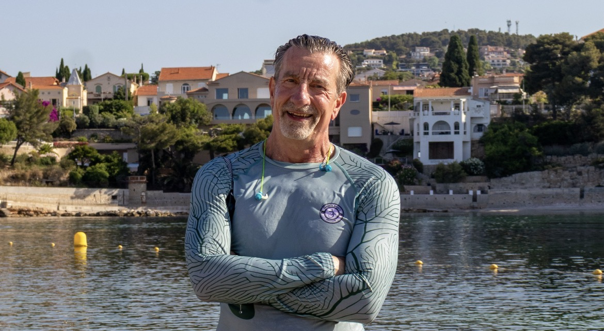

Mon histoire
Construire une vie.
Avec indépendance.
Avec confiance.
Avec détermination.
Mon histoire n'est pas celle d'une rupture.
Elle s'est construite très tôt, au fil des rencontres, des cultures et des responsabilités.
Une conviction est restée intacte : il est toujours possible de construire la suite.


Les premières fondations
Construire ses premières fondations.
Très jeune, j'ai appris à compter sur moi-même. Cette autonomie ne signifiait pas avancer seul, mais observer, comprendre et trouver des solutions lorsque le chemin n'était pas encore tracé.
Cette manière de regarder le monde a développé ma curiosité, mon sens des responsabilités et une confiance profonde dans la capacité de chacun à mobiliser ses propres ressources.
Avec le temps, j'ai compris qu'une vie ne se construit jamais seul. Les rencontres, la confiance accordée et les responsabilités partagées sont devenues les véritables fondations de tout ce que j'ai entrepris.
Choisir le monde
Partir pour construire, jamais pour fuir.
Quitter la France n'a jamais été une fuite. C'était un choix de construction. J'avais envie d'apprendre autrement, de découvrir d'autres cultures et de me confronter à des façons différentes de penser, de travailler et de vivre.
Les États-Unis m'ont appris l'initiative, l'autonomie et la confiance dans les idées nouvelles. Les Pays-Bas m'ont fait découvrir une autre manière de diriger : plus collaborative, plus horizontale et davantage fondée sur l'écoute.
Au fil des années, j'ai travaillé avec des équipes de nombreuses nationalités. J'y ai découvert que les différences culturelles ne sont pas des obstacles mais des ressources. Construire des ponts entre les personnes est devenu aussi important que construire les projets eux-mêmes.
Sans le savoir encore, cette expérience façonnait déjà ce qui allait devenir, bien plus tard, ma manière d'accompagner les autres.
Construire avec les autres
Les plus belles constructions sont humaines.
Au fil de ma carrière, j'ai occupé des fonctions très différentes, dans plusieurs pays et au sein d'organisations internationales. Pourtant, ce ne sont jamais les intitulés de poste qui m'ont le plus marqué.
Ce dont je me souviens, ce sont les équipes. Les personnes. Les moments où la confiance permettait à chacun de donner le meilleur de lui-même, où les différences devenaient une richesse et où les difficultés faisaient émerger des solutions nouvelles.
Naturellement, je suis souvent devenu celui vers qui les autres venaient pour réfléchir, prendre du recul ou retrouver de la clarté. Non parce que j'avais toutes les réponses, mais parce que je savais écouter, relier les idées et faire émerger les ressources déjà présentes.
C'est avec le temps que j'ai compris que cette manière d'être constituait déjà le cœur de ce que je fais aujourd'hui comme coach.
Continuer à construire
La transplantation n'a pas changé qui j'étais. Elle a amplifié ce qui comptait déjà.
Lorsque la maladie cardiaque est devenue une réalité, beaucoup ont parlé d'un nouveau départ. Je ne l'ai jamais vécu ainsi.
La transplantation n'a pas effacé la personne que j'étais auparavant. Elle m'a simplement offert la possibilité de poursuivre une construction déjà engagée depuis longtemps : continuer à apprendre, transmettre, accompagner et vivre pleinement.
Cette expérience a profondément renforcé ma gratitude, ma capacité d'écoute et mon attention portée à l'essentiel. Elle m'a également rappelé que la résilience n'est pas un acte héroïque. C'est une manière d'avancer, une décision qui se construit chaque jour.
Aujourd'hui encore, je ne regarde pas cette période comme une rupture, mais comme une étape qui a donné davantage de profondeur au chemin que je suivais déjà.
Aujourd'hui
Continuer à construire.
Aujourd'hui, cette même conviction continue de guider chacun de mes projets. Le coaching en est l'expression la plus directe : accompagner des personnes à retrouver de la clarté, renforcer leur confiance et construire leur prochaine étape, qu'elle soit professionnelle ou personnelle.
Cette envie de construire s'exprime aussi autrement. Avec Tarente Sports, j'ai souhaité créer une marque née de deux évidences : l'amour de la mer, qui m'accompagne depuis toujours, et la nécessité, après ma transplantation cardiaque, de protéger durablement ma peau du soleil en raison des traitements immunosuppresseurs. Les premiers vêtements anti-UV sont nés de cette rencontre entre une expérience de vie et une solution concrète.
Je poursuis également mes recherches, mon écriture et plusieurs projets qui prolongent cette même philosophie : transformer une expérience en ressource utile pour les autres.
La nage en mer, pratiquée toute l'année, reste mon équilibre. Elle me rappelle chaque jour que l'on avance rarement contre les éléments, mais que l'on apprend à évoluer avec eux.
Au fond, qu'il s'agisse d'un accompagnement, d'un projet entrepreneurial, d'un livre ou d'une conférence, le fil conducteur reste le même : construire avec sens, avancer avec confiance et permettre aux autres de révéler leurs propres ressources.
Et maintenant ?
Peut-être que votre histoire n'a pas besoin d'être recommencée.
Peut-être a-t-elle simplement besoin d'être regardée autrement.
Nous avons parfois tendance à croire qu'il faut repartir de zéro, changer complètement de vie ou devenir une autre personne pour avancer. Mon expérience m'a appris l'inverse.
Les ressources les plus précieuses sont souvent déjà présentes. Elles demandent simplement à être révélées, organisées et remises en mouvement.
Si mon parcours peut vous transmettre une conviction, c'est celle-ci : il est toujours possible de construire la suite.
Épilogue
Nous ne choisissons pas toujours les chemins que la vie place devant nous. En revanche, nous pouvons toujours choisir la manière de les construire.
Si cette histoire a un sens, ce n'est pas parce qu'elle est exceptionnelle. C'est parce qu'elle m'a confirmé une conviction simple : chacun possède déjà davantage de ressources qu'il ne l'imagine.
C'est avec cette conviction que j'accompagne aujourd'hui les personnes, les équipes et les organisations qui souhaitent retrouver de la clarté, avancer avec confiance et construire la prochaine étape de leur parcours.